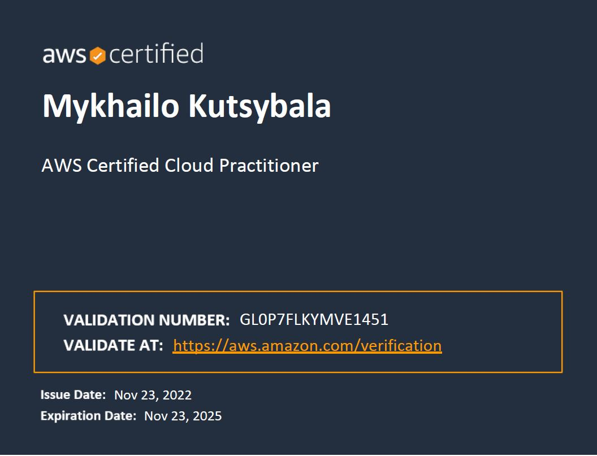

EPAM Cloud&DevOps Fundamentals Autumn 2022
My own photo
AWS services with which I've worked:

Links on completed labs:
AWS Technical Essentials
Getting Started with DevOps on AWS
AWS Cloud Development Kit Primer
AWS Certified SysOps Administrator - Associate Official Practice Question Set
AWS cloud practitioner certificate
